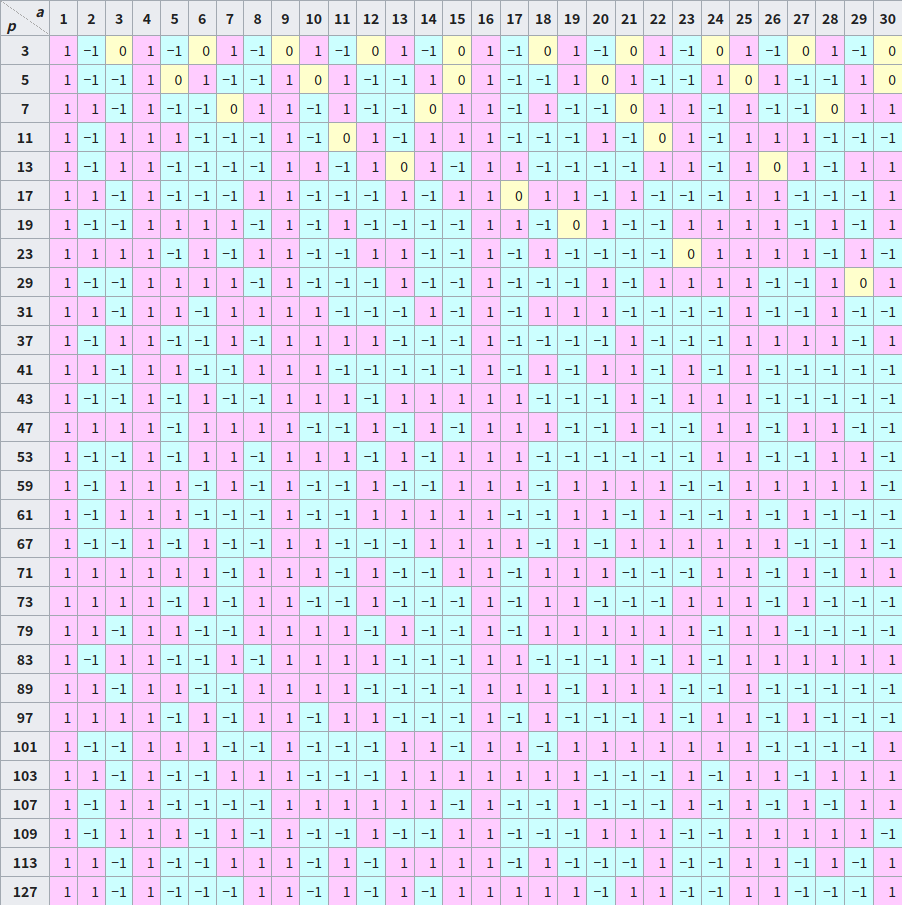

OI Wiki · prijevod · MatematikaOI Wiki · translation · Mathematics
Kvadratni ostatakQuadratic residue
Sadržaj
Uvod
Kvadratni ostatci mogu se shvatiti kao rasprava o izvedivosti operacije vađenja kvadratnog korijena u modularnoj aritmetici. Za korijene višeg reda vidi k-ti ostatak.
Definicija
Kvadratni ostatak
Neka su \(a\) i \(p\) cijeli brojevi takvi da je \((a,p)=1\). Ako postoji cijeli broj \(x\) takav da je
kažemo da je \(a\) kvadratni ostatak modulo \(p\); u suprotnom kažemo da je \(a\) kvadratni neostatak modulo \(p\). U nastavku, kad je modul \(p\) očit, možemo kratko pisati kvadratni (ne)ostatak.
Eulerov kriterij
Kad je modul neparan prost broj, vrijedi sljedeći teorem:
Eulerov kriterij
Za neparan prost broj \(p\) i cijeli broj \(a\) takav da je \((a,p)=1\) vrijedi
Drugim riječima, za gornje \(p\) i \(a\):
- \(a\) je kvadratni ostatak modulo \(p\) ako i samo ako je \(a^{\frac{p-1}{2}}\equiv 1 \pmod p\).
- \(a\) je kvadratni neostatak modulo \(p\) ako i samo ako je \(a^{\frac{p-1}{2}}\equiv -1 \pmod p\).
Dokaz
Prvo, prema malom Fermatovu teoremu vrijedi \(a^{p-1}\equiv 1\pmod p\), pa je
odakle za svaki \(a\) s \((a,p)=1\) vrijedi \(a^{(p-1)/2}\equiv \pm 1\pmod p.\)
Osim toga, budući da je \(p\) neparan prost broj, imamo:
gdje je \(P(x)\) neki polinom s cjelobrojnim koeficijentima, pa dalje:
Prema teoremu 5 o kongruencijskim jednadžbama, \(a\) je kvadratni ostatak modulo \(p\) ako i samo ako je \(a^{(p-1)/2}\equiv 1\pmod p\). Stoga je \(a\) kvadratni neostatak modulo \(p\) ako i samo ako je \(a^{(p-1)/2}\equiv -1\pmod p\).
Na temelju Eulerova kriterija dobivamo sljedeću posljedicu:
Broj kvadratnih ostataka
Za neparan prost broj \(p\) modulo \(p\) postoji po \(\dfrac{p-1}{2}\) kvadratnih ostataka i kvadratnih neostataka.
Dokaz
Prema Eulerovu kriteriju promatramo \(a^{\frac{p-1}{2}}\equiv 1\pmod p.\)
Uočimo da \(\dfrac{p-1}{2}\mid (p-1)\), pa prema teoremu 6 o kongruencijskim jednadžbama kongruencija \(a^{\frac{p-1}{2}}\equiv 1\pmod p\) ima \(\dfrac{p-1}{2}\) rješenja. Dakle, modulo \(p\) postoji po \(\dfrac{p-1}{2}\) kvadratnih ostataka i kvadratnih neostataka.
Legendreov simbol
Radi lakše daljnje rasprave uvodimo sljedeću oznaku:
Legendreov simbol
Za neparan prost broj \(p\) i cijeli broj \(a\) Legendreov simbol definira se ovako:
Drugim riječima, za \(a\) s \((a,p)=1\):
- \(a\) je kvadratni ostatak modulo \(p\) ako i samo ako je \(\left(\dfrac{a}{p}\right)=1.\)
- \(a\) je kvadratni neostatak modulo \(p\) ako i samo ako je \(\left(\dfrac{a}{p}\right)=-1.\)
Sljedeća tablica prikazuje neke vrijednosti Legendreova simbola (izvor: Wikipedia).

Svojstva
-
Za svaki cijeli broj \(a\),
\[ a^{\frac{p-1}{2}}\equiv \left(\frac{a}{p}\right)\pmod p. \]Nadalje, imamo posljedice:
-
\[ \left(\dfrac{1}{p}\right)=1. \]
-
\[ \left(\dfrac{-1}{p}\right)=(-1)^{\frac{p-1}{2}}=\begin{cases} 1, & p\equiv 1\pmod 4,\\ -1, & p\equiv 3\pmod 4. \end{cases} \]
-
-
\(a_1\equiv a_2\pmod p\implies \left(\dfrac{a_1}{p}\right)=\left(\dfrac{a_2}{p}\right).\)
-
(Potpuna multiplikativnost) Za sve cijele brojeve \(a_1,a_2\),
\[ \left(\frac{a_1a_2}{p}\right)=\left(\frac{a_1}{p}\right)\left(\frac{a_2}{p}\right). \]Imamo posljedicu: za cijele brojeve \(a,b\) takve da \(p\nmid b\) vrijedi
\[ \left(\frac{ab^2}{p}\right)=\left(\frac{a}{p}\right). \] -
\[ \left(\frac{2}{p}\right)=(-1)^{\frac{p^2-1}{8}}=\begin{cases} 1, & p\equiv \pm 1\pmod 8, \\ -1, & p\equiv \pm 3\pmod 8. \\ \end{cases} \]
Dokaz
- Slijedi izravno iz definicije Legendreova simbola i Eulerova kriterija.
-
Uočimo da
\[ a_1\equiv a_2\pmod p\implies \left(\frac{a_1}{p}\right)\equiv\left(\frac{a_2}{p}\right)\pmod p, \]a kako je \(\left|\left(\dfrac{a_1}{p}\right)-\left(\dfrac{a_2}{p}\right)\right|\leq 2\) i \(p>2\), slijedi:
\[ a_1\equiv a_2\pmod p\implies \left(\frac{a_1}{p}\right)=\left(\frac{a_2}{p}\right). \] -
Iz 1 dobivamo
\[ \left(\frac{a_1a_2}{p}\right)\equiv a_1^{\frac{p-1}{2}}a_2^{\frac{p-1}{2}}\equiv\left(\frac{a_1}{p}\right)\left(\frac{a_2}{p}\right)\pmod p. \]a kako je \(\left|\left(\dfrac{a_1a_2}{p}\right)-\left(\dfrac{a_1}{p}\right)\left(\dfrac{a_2}{p}\right)\right|\leq 2\) i \(p>2\), slijedi
\[ \left(\frac{a_1a_2}{p}\right)=\left(\frac{a_1}{p}\right)\left(\frac{a_2}{p}\right). \]
Na temelju gornjih svojstava, ako za bilo koja dva neparna prosta broja \(p\) i \(q\) možemo izračunati vrijednost \(\left(\dfrac{p}{q}\right)\), onda možemo izračunati vrijednost Legendreova simbola u svakom dopuštenom slučaju. Slijedi elegantan teorem koji vješto uspostavlja vezu između \(\left(\dfrac{p}{q}\right)\) i \(\left(\dfrac{q}{p}\right)\) te nam omogućuje da računanje dovršimo idejom sličnom Euklidovu algoritmu.
Kvadratni zakon reciprociteta
Kvadratni zakon reciprociteta
Neka su \(p\) i \(q\) dva različita neparna prosta broja. Tada je
Postoji mnogo načina dokazivanja1. Jedan se dokaz temelji na sljedećoj lemi2:
Gaussova lema
Neka je \(p\) neparan prost broj, \((n,p)=1\), i za cijele brojeve \(k~\left(1\leq k\leq (p-1)/2\right)\) neka je \(r_k=nk\bmod p\). Neka je \(A=\{r_k:r_k < p/2\}\) i \(B=\{r_k:r_k > p/2\}\). Tada je
Dokaz
Neka je \(\lambda=|A|\) i \(\mu=|B|\); očito je \(\lambda+\mu=(p-1)/2\). Tada je
Znamo da za svaki element \(b\) iz \(B\) vrijedi \(\dfrac{p}{2} < b < p\), pa je \(0 < p-b < \dfrac{p}{2}\). Nadalje, za svaki element \(b\) iz \(B\) vrijedi \(p-b\notin A\); u protivnom, kad bi u \(A,B\) redom postojali elementi \(a,b\) takvi da je \(a=p-b\), postojali bi cijeli brojevi \(0 < k_1,k_2 < (p-1)/2\) takvi da je \(a=nk_1\), \(b=nk_2\) i \(p\mid n(k_1+k_2)\); budući da je \((n,p)=1\), slijedi \(p\mid (k_1+k_2)\), a kako je \(0 < k_1+k_2 < p\), dobivamo kontradikciju. Stoga je
odnosno
Tvrdnja sada slijedi iz svojstva 1 Legendreova simbola.
Poopćenje
Gaussova lema može se poopćiti na sljedeći način7:
Neka je \(p\) neparan prost broj i neka \(I\subset\mathbf{Z}_p^*\) zadovoljava \(I\cup -I=\mathbf{Z}_p^*\) i \(I\cap -I=\varnothing\), gdje je \(-I:=\{-i:i\in I\}\). Tada za svaki cijeli broj \(n\) relativno prost s \(p\) vrijedi
gdje je \(J=\{j\in I:nj\in -I\}\).
Lako se vidi da se izborom \(I=\{1,2,\dots,(p-1)/2\}\) dobiva Gaussova lema. Dokaz je u osnovi isti kao dokaz Gaussove leme, pa ga izostavljamo.
Lako se dobiva sljedeća posljedica:
Posljedica
Za neparan prost broj \(p\) vrijedi
Za neparan prost broj \(p\) i neparan broj \(n\) takav da je \((n,p)=1\) vrijedi
Dokaz
Za \(n,k,r_k,A,B,\lambda,\mu\) iz Gaussove leme vrijedi \(nk=p\left\lfloor\dfrac{nk}{p}\right\rfloor+r_k\), pa dalje
dakle
Ako je \(n=2\), onda je \(0 < \dfrac{nk}{p}\leq\dfrac{p-1}{p} < 1\), odakle slijedi
Ako \(2\nmid n\), onda je
Prema gornjoj posljedici, za dokaz kvadratnog zakona reciprociteta dovoljno je provjeriti
Promotrimo skup \(S\) koji čine točke \((px,qy)\), \(1\leq x\leq \dfrac{q-1}{2},1\leq y\leq \dfrac{p-1}{2}\), i podijelimo ga na dva dijela prema odnosu veličina \(px\) i \(qy\) (očito je \(px\neq qy\)); dovoljno je provjeriti veličine tih triju skupova.
Kvadratni zakon reciprociteta ne služi samo za odlučivanje je li broj \(n\) kvadratni ostatak modulo \(p\), nego i za određivanje strukture modula za koje je broj \(n\) kvadratni ostatak.
Primjer
- Neparni prosti brojevi \(p\) za koje je \(5\) kvadratni ostatak zadovoljavaju \(p\equiv \pm 1\pmod 5.\)
- Neparni prosti brojevi \(p\) za koje je \(-3\) kvadratni ostatak zadovoljavaju \(p\equiv 1\pmod 3.\)
- Neparni prosti brojevi \(p\) za koje su \(-2\) i \(3\) istodobno kvadratni ostatci zadovoljavaju \(p\equiv 11\pmod{24}.\)
Osim toga, možemo dokazati i tvrdnje poput „postoji beskonačno mnogo prostih brojeva oblika \(4k+1\)”; takve su tvrdnje zapravo jednostavne posljedice Dirichletova teorema.
Jacobijev simbol
Prema kvadratnom zakonu reciprociteta sasvim se prirodno nameće jedan način poopćenja Legendreova simbola:
Jacobijev simbol
Za pozitivan neparan broj \(m=p_1^{\alpha_1}\dots p_k^{\alpha_k}\) i cijeli broj \(a\), gdje su \(p_1,\dots,p_k\) prosti brojevi, a \(\alpha_1,\dots,\alpha_k\) pozitivni cijeli brojevi, Jacobijev simbol definira se ovako:
Pri tome su \(\left(\frac{a}{p_i}\right)\) na desnoj strani jednakosti Legendreovi simboli. Osim toga, za cijeli broj \(a\) vrijedi \(\left(\dfrac{a}{1}\right)=1.\)
Upozorenje
Obično ne razlikujemo Legendreov i Jacobijev simbol jer iz potpune multiplikativnosti slijedi da Jacobijev simbol ima ista svojstva kao Legendreov, pa se oba simbola računaju na isti način. Ipak, treba paziti na jedno: kad \(m\) nije neparan prost broj, vrijednost \(\left(\dfrac{a}{m}\right)\) nije povezana s tim je li \(a\) kvadratni ostatak modulo \(m\); no ako je \(\left(\dfrac{a}{m}\right)=-1\), onda \(m\) ima barem jedan (zapravo neparan broj) prosti faktor \(p\) za koji je \(a\) kvadratni neostatak modulo \(p\), pa je tada \(a\) kvadratni neostatak modulo \(m\).
Modul možemo dalje poopćiti na cijele brojeve (treba samo dopuniti definicije \(\left(\dfrac{a}{-1}\right)\), \(\left(\dfrac{a}{0}\right)\) i \(\left(\dfrac{a}{2}\right)\)); tako dobivamo Kroneckerov simbol.
Kvadratni korijen u modularnoj aritmetici
U ovom odjeljku razmatramo algoritme za vađenje kvadratnog korijena u modularnoj aritmetici. Posebno, odjeljak se uglavnom bavi slučajem prostog modula. Za slučaj općeg modula vidi raspravu u korijeni višeg reda u modularnoj aritmetici.
Algoritam za posebne slučajeve
Za kongruenciju \(x^2\equiv a\pmod p\), gdje je \(p\) neparan prost broj i \(a\) kvadratni ostatak, u slučaju \(p\bmod 4=3\) postoji jednostavnije rješenje; promotrimo
Tada je \(a^{(p+1)/4}\bmod p\) jedno rješenje.
Atkinov algoritam
Promatramo i dalje gornju kongruenciju, sada uz \(p\bmod 8=5\). Neka je \(b\equiv (2a)^{(p-5)/8}\pmod p\) i \(\mathrm{i}\equiv 2ab^2\pmod p\). Tada je \(\mathrm{i}^2\equiv -1\pmod p\), a \(ab(\mathrm{i}-1)\bmod p\) jedno je rješenje.
Dokaz
Tada je
Cipolla algoritam
Cipolla algoritam služi za rješavanje kongruencije \(y^2\equiv a\pmod p\), gdje je \(p\) neparan prost broj i \(a\) kvadratni ostatak.
U ovom odjeljku razmatramo računanje u \(\mathbf{F}_p\lbrack x\rbrack /(x^2-g)\), gdje je \(g \in \mathbf{F}_p\).
Način računanja
Čitatelji koji nisu upoznati s prstenima polinoma mogu to jednostavno shvatiti ovako: elementi tog skupa imaju oblik \(a_0+a_1x\) s \(a_0,a_1\in\mathbf F_p\) i podliježu sljedećim pravilima računanja:
Treba napomenuti da \(x\) ovdje nije konkretan broj, nego formalna oznaka u polinomu. Ključna je točka računanja da se pomoću \(x^2 \equiv g \pmod{(x^2-g)}\) kvadratni član pretvara u linearni i konstantni član. Osim toga, sve se cjelobrojne operacije rade modulo \(p\).
Više o toj strukturi potražite na stranicama Polinomi, Teorija polja i dr.
Prvi je korak algoritma pronaći \(r\) takav da je \(r^2-a\) kvadratni neostatak. Naravno, za \(a \equiv 0 \pmod p\) takav \(r\) nije moguće pronaći, pa taj slučaj treba obraditi posebno. U nastavku razmatramo samo slučaj \(a \not\equiv 0 \pmod p\). Tada možemo nasumce izabrati \(r\) i provjeriti ga; u očekivanju ga nalazimo u \(2\) koraka. Tada je \((r-x)^{\frac{p+1}{2}}\bmod (x^2-(r^2-a))\) jedno rješenje, a može se izračunati brzim potenciranjem.
Zašto su u očekivanju potrebna samo dva koraka
Promotrimo slučaj kad je \(r^2-a\) kvadratni ostatak. Tada postoji \(x\) takav da je \(r^2-a \equiv x^2 \pmod p\); prebacivanjem članova dobivamo \((r+x)(r-x) \equiv a \pmod p\). Lako se vidi da svaki \((r+x) \in [1, p-1]\) jednoznačno odgovara jednom paru rješenja \((r,x)\), pa izvorna jednadžba ima ukupno \(p-1\) rješenja. Razlikujemo dva slučaja: \(x \equiv 0\) i \(x \not\equiv 0\). Za \(x \equiv 0\), budući da je \(a\) kvadratni ostatak, odgovaraju \(2\) vrijednosti \(r\); za \(x \not\equiv 0\) postoji \(p-1-2\) slučajeva, a svakom \(r\) odgovaraju dva od njih, pa ukupno ima \(\dfrac{p-3}{2}\) vrijednosti \(r\). Sveukupno, postoji \(2+\dfrac{p-3}{2}=\dfrac{p+1}{2}\) slučajeva u kojima je \(r^2-a\) kvadratni ostatak, pa je vjerojatnost da u jednom pokušaju dobijemo kvadratni neostatak \(\dfrac{p-1}{2p}\), a očekivani broj koraka \(\dfrac{2p}{p-1} \approx 2\).
Dokaz
Radi jednostavnosti, neka je \(f(x)=x^2-(r^2-a)\in\mathbf{F}_p\lbrack x\rbrack\).
Treba dokazati da je \((r-x)^{\frac{p+1}{2}} \bmod f(x)\) rješenje izvorne jednadžbe i da pripada \(\mathbf{F}_p\). Prvo dokazujemo prvu tvrdnju, tj. da je \((r-x)^{p+1}\equiv a\pmod {f(x)}\). Za to nam prvo trebaju dvije leme:
Lema 1: \(x^p \equiv -x \pmod {f(x)}\)
Dokaz:
Lema 2: \((a+b)^p \equiv a^p+b^p \pmod p\)
Pomoću binomnog teorema lako se vidi da se, osim u prvom i posljednjem članu, \(p\) u brojniku ne može pokratiti, pa ostaje samo \(a^p+b^p\).
S tim dvjema lemama vratimo se dokazu izvorne tvrdnje:
Sada kontradikcijom dokazujemo da dobiveno rješenje pripada \(\mathbf{F}_p\), tj. da mu je koeficijent uz \(x\) jednak \(0\).
Pretpostavimo da postoji \((a_0+a_1x)^2 \equiv a \pmod {f(x)}\) s \(a_1 \not\equiv 0 \pmod p\), tj. \(a_0^2+2a_0a_1x+a_1^2x^2 \equiv a \pmod {f(x)}\); prebacivanjem članova i sređivanjem dobivamo:
Koeficijent uz \(x\) na lijevoj strani jednak je \(0\), pa je i koeficijent uz \(x\) na desnoj strani \(0\), tj. \(a_0a_1 \equiv 0 \pmod p\). Budući da smo pretpostavili \(a_1 \not\equiv 0 \pmod p\), nužno je \(a_0 \equiv 0 \pmod p\), pa je \((a_1x)^2 \equiv a \pmod {f(x)}\), tj. \(r^2-a \equiv aa_1^{-2} \pmod p\).
Kako su \(a\) i \(a_1^{-2}\) kvadratni ostatci, prema multiplikativnosti Legendreova simbola i \(aa_1^{-2}\) je kvadratni ostatak, što je u kontradikciji s tim da je \(r^2-a\) kvadratni neostatak. Dakle, izvorna jednadžba nema rješenja s koeficijentom uz \(x\) različitim od \(0\), pa je i koeficijent uz \(x\) u našem rješenju nužno \(0\).
Zadatak-predložak Luogu P5491【模板】二次剩余 (predložak: kvadratni ostatak)
#include <iostream>
#include <random>
long long p, v; // redom modul i vrijednost r^2 - a
struct Poly {
long long a, b;
Poly(long long _a = 0, long long _b = 0) : a(_a), b(_b) {}
};
Poly operator*(const Poly& x, const Poly& y) {
// preopterećeno množenje, usp. gornji opis pravila računanja
return Poly((x.a * y.a + v * (x.b * y.b % p)) % p,
(x.a * y.b + x.b * y.a) % p);
}
// brzo potenciranje polinoma, služi za računanje odgovora
Poly modpow(Poly a, long long b) {
Poly res(1, 0);
while (b) {
if (b & 1) res = res * a;
a = a * a;
b >>= 1;
}
return res;
}
// obično brzo potenciranje, služi za provjeru kvadratnog neostatka
long long modpow(long long a, long long b) {
long long res = 1;
while (b) {
if (b & 1) res = res * a % p;
a = a * a % p;
b >>= 1;
}
return res;
}
// za generiranje slučajnih brojeva
std::mt19937 rng(std::random_device{}());
long long cipolla(long long a, long long _p) {
p = _p;
if (a == 0)
return 0; // poseban slučaj za 0
else if (modpow(a, (p - 1) / 2) == p - 1)
return -1; // provjera kvadratnog neostatka, tada nema rješenja
else {
// slučajno biramo r tako da je r^2 - a kvadratni neostatak
long long r;
for (r = rng() % p;; r = rng() % p) {
if (modpow((r * r - a + p) % p, (p - 1) / 2) == p - 1) break;
}
v = (r * r - a + p) % p;
return modpow(Poly(r, 1), (p + 1) / 2).a; // rezultat računamo prema zaključnoj formuli
}
}
int main() {
int t, a, p;
std::cin >> t;
while (t--) {
std::cin >> a >> p;
int ans = cipolla(a, p);
if (ans == -1)
std::cout << "Hola!" << std::endl;
else if (ans == 0)
std::cout << 0 << std::endl;
else {
// suprotni broj je drugo rješenje
int ans2 = (p - ans) % p;
if (ans2 < ans) std::swap(ans, ans2);
std::cout << ans << " " << ans2 << std::endl;
}
}
return 0;
}
Bostan–Mori algoritam
Taj se algoritam temelji na Cipolla algoritmu: problem pretvaramo u homogenu linearnu rekurziju s konstantnim koeficijentima i zatim primjenjujemo Bostan–Mori algoritam. Promotrimo drugi uobičajeni opis Cipolla algoritma: \(b=x^{\left(p+1\right)/2}\bmod{\left(x^2-tx+a\right)}\) jedno je rješenje koje zadovoljava \(b^2\equiv a\pmod{p}\)3, gdje je \(x^2-tx+a\in \mathbf{F}_p\lbrack x\rbrack\) nesvodljiv polinom. Koeficijent \(t\) također se bira nasumce. Dokaz izostavljamo. Prema algoritmu iz rada Bostana i Morija4 vidimo da se problem može svesti na računanje jednog koeficijenta multiplikativnog inverza formalnog reda potencija:
i
a za \(n=0\) očito je \(\left\lbrack x^0\right\rbrack\dfrac{k_0+k_1x}{1+k_2x+k_3x^2}=k_0\). Taj algoritam ima manje množenja nego Cipolla algoritam. Drugi srodni algoritmi s malim brojem množenja mogu se naći u Müllerovu članku5.
Legendreov algoritam
Za kongruenciju \(x^2\equiv a\pmod p\), gdje je \(p\) neparan prost broj i \(a\) kvadratni ostatak, Legendreov se algoritam može opisati ovako: nađemo \(r\) takav da je \(r^2-a\) kvadratni neostatak i stavimo \(a_0+a_1x=(r-x)^{\frac{p-1}{2}}\bmod (x^2-a)\); tada je \(a_0\equiv 0\pmod p\) i \(a_1^{-2}\equiv a\pmod p\).
Dokaz
Izaberimo \(b\) takav da je \(b^2\equiv a\pmod p\). Tada je \((r-b)(r+b)=r^2-a\) kvadratni neostatak, pa je
Postoji homomorfizam prstena
Tada je
pa je \(2a_0=(\pm 1)+(\mp 1)=0\) i \(2a_1b=(\pm 1)-(\mp 1)=\pm 2\).
Tonelli–Shanksov algoritam
Tonelli–Shanksov algoritam algoritam je za rješavanje kongruencije \(x^2\equiv a\pmod p\) temeljen na diskretnom logaritmu6, gdje je \(p\) neparan prost broj i \(a\) kvadratni ostatak modulo \(p\).
Neka je \(p-1=m2^n\), gdje je \(m\) neparan. I dalje nasumce tražimo \(r\in\mathbf{F}_p\) takav da je \(r\) kvadratni neostatak. Neka je \(g\equiv r^m\pmod p\) i \(b\equiv a^{(m-1)/2}\pmod p\). Tada postoji cijeli broj \(e\in\lbrace 0,1,2,\dots ,2^n-1\rbrace\) takav da je \(ab^2\equiv g^e\pmod p\). Ako je \(a\) kvadratni ostatak, onda je \(e\) paran i \(\left(abg^{-e/2}\right)^2\equiv a\pmod p\).
Dokaz
Prema malom Fermatovu teoremu vrijedi
Budući da je \(r\) kvadratni neostatak, vrijedi i
Dakle, red elementa \(g\) modulo \(p\) jest \(2^n\). Nadalje, budući da je \(ab^2\equiv a^m\pmod p\) rješenje jednadžbe \(x^{2^n}\equiv 1\pmod p\), \(a^m\) je potencija od \(g\). Pišimo \(a^m\equiv g^e\pmod p\).
Budući da je \(a\) kvadratni ostatak, vrijedi
Prema svojstvima reda elementa vrijedi \(2^n\mid e2^{n-1}\), pa je \(e\) paran. Stoga je \(abg^{-e/2}\bmod p\) dobro definirano i
Preostaje pitanje kako izračunati \(e\). Tonelli i Shanks predložili su određivanje jedne binarne znamenke od \(e\) odjednom. Zapišimo \(e\) u binarnom obliku \(e=e_0+2e_1+4e_2+\cdots\), gdje je \(e_k\in\lbrace 0,1\rbrace\). Budući da je \(a\) kvadratni ostatak, na početku je \(e_0=0\), a zatim se vrijednosti \(e_k\) određuju znamenku po znamenku pomoću sljedećeg svojstva:
Pri tome je \(g^e\equiv ab^2\pmod p\) poznato, a vrijednost \(e\bmod 2^k\) može se izračunati iz prethodnih znamenki \(e_0,e_1,\cdots,e_{k-1}\). Naravno, pri implementaciji algoritma dovoljno je izravno održavati umnožak \(g^eg^{-(e\bmod 2^k)}\bmod p\).
Zadaci za vježbu
Literatura i bilješke
-
Carl Friedrich Gauss. Untersuchungen über höhere Arithmetik, 1965. Page 458-462. ↩
-
A. Menezes, P. van Oorschot and S. Vanstone. Handbook of Applied Cryptography, 1996. ↩
-
Alin Bostan, Ryuhei Mori. A Simple and Fast Algorithm for Computing the N-th Term of a Linearly Recurrent Sequence. Available at https://arxiv.org/abs/2008.08822. ↩
-
S. Müller, On the computation of square roots in finite fields, Design, Codes and Cryptography, Vol.31, pp. 301-312, 2004. ↩
-
Daniel. J. Bernstein. Faster Square Roots in Annoying Finite Fields. ↩
-
Kobi Kremnizer.Lectures in number theory 2022. Proposition 4.3. ↩
Contents
Introduction
Quadratic residues can be thought of as a discussion of whether the square root operation is feasible in modular arithmetic. For roots of higher degree, see k-th residue.
Definition
Quadratic residue
Let \(a\) and \(p\) be integers with \((a,p)=1\). If there exists an integer \(x\) such that
then \(a\) is called a quadratic residue modulo \(p\); otherwise \(a\) is called a quadratic non-residue modulo \(p\). In what follows, when the modulus \(p\) is clear, we may simply write quadratic (non-)residue.
Euler's criterion
When the modulus is an odd prime, we have the following theorem:
Euler's criterion
For an odd prime \(p\) and an integer \(a\) with \((a,p)=1\),
That is, for the above \(p\) and \(a\):
- \(a\) is a quadratic residue modulo \(p\) if and only if \(a^{\frac{p-1}{2}}\equiv 1 \pmod p\).
- \(a\) is a quadratic non-residue modulo \(p\) if and only if \(a^{\frac{p-1}{2}}\equiv -1 \pmod p\).
Proof
First, by Fermat's little theorem we have \(a^{p-1}\equiv 1\pmod p\), hence
so for every \(a\) with \((a,p)=1\) we have \(a^{(p-1)/2}\equiv \pm 1\pmod p.\)
Moreover, since \(p\) is an odd prime, we have:
where \(P(x)\) is some polynomial with integer coefficients, and therefore:
By Theorem 5 on congruence equations, \(a\) is a quadratic residue modulo \(p\) if and only if \(a^{(p-1)/2}\equiv 1\pmod p\). Consequently, \(a\) is a quadratic non-residue modulo \(p\) if and only if \(a^{(p-1)/2}\equiv -1\pmod p\).
Based on Euler's criterion, we obtain the following corollary:
Number of quadratic residues
For an odd prime \(p\), there are \(\dfrac{p-1}{2}\) quadratic residues and as many quadratic non-residues modulo \(p\).
Proof
By Euler's criterion, consider \(a^{\frac{p-1}{2}}\equiv 1\pmod p.\)
Note that \(\dfrac{p-1}{2}\mid (p-1)\), so by Theorem 6 on congruence equations the congruence \(a^{\frac{p-1}{2}}\equiv 1\pmod p\) has \(\dfrac{p-1}{2}\) solutions. Therefore there are \(\dfrac{p-1}{2}\) quadratic residues and as many quadratic non-residues modulo \(p\).
Legendre symbol
To simplify the following discussion, we introduce the following notation:
Legendre symbol
For an odd prime \(p\) and an integer \(a\), the Legendre symbol is defined as follows:
That is, for \(a\) with \((a,p)=1\):
- \(a\) is a quadratic residue modulo \(p\) if and only if \(\left(\dfrac{a}{p}\right)=1.\)
- \(a\) is a quadratic non-residue modulo \(p\) if and only if \(\left(\dfrac{a}{p}\right)=-1.\)
The table below shows some values of the Legendre symbol (from Wikipedia).
Properties
-
For every integer \(a\),
\[ a^{\frac{p-1}{2}}\equiv \left(\frac{a}{p}\right)\pmod p. \]Furthermore, we have the corollaries:
-
\[ \left(\dfrac{1}{p}\right)=1. \]
-
\[ \left(\dfrac{-1}{p}\right)=(-1)^{\frac{p-1}{2}}=\begin{cases} 1, & p\equiv 1\pmod 4,\\ -1, & p\equiv 3\pmod 4. \end{cases} \]
-
-
\(a_1\equiv a_2\pmod p\implies \left(\dfrac{a_1}{p}\right)=\left(\dfrac{a_2}{p}\right).\)
-
(Complete multiplicativity) For all integers \(a_1,a_2\),
\[ \left(\frac{a_1a_2}{p}\right)=\left(\frac{a_1}{p}\right)\left(\frac{a_2}{p}\right). \]We have the corollary: for integers \(a,b\) with \(p\nmid b\),
\[ \left(\frac{ab^2}{p}\right)=\left(\frac{a}{p}\right). \] -
\[ \left(\frac{2}{p}\right)=(-1)^{\frac{p^2-1}{8}}=\begin{cases} 1, & p\equiv \pm 1\pmod 8, \\ -1, & p\equiv \pm 3\pmod 8. \\ \end{cases} \]
Proof
- Follows directly from the definition of the Legendre symbol and Euler's criterion.
-
Note that
\[ a_1\equiv a_2\pmod p\implies \left(\frac{a_1}{p}\right)\equiv\left(\frac{a_2}{p}\right)\pmod p, \]and since \(\left|\left(\dfrac{a_1}{p}\right)-\left(\dfrac{a_2}{p}\right)\right|\leq 2\) and \(p>2\), we get:
\[ a_1\equiv a_2\pmod p\implies \left(\frac{a_1}{p}\right)=\left(\frac{a_2}{p}\right). \] -
From 1 we get
\[ \left(\frac{a_1a_2}{p}\right)\equiv a_1^{\frac{p-1}{2}}a_2^{\frac{p-1}{2}}\equiv\left(\frac{a_1}{p}\right)\left(\frac{a_2}{p}\right)\pmod p. \]and since \(\left|\left(\dfrac{a_1a_2}{p}\right)-\left(\dfrac{a_1}{p}\right)\left(\dfrac{a_2}{p}\right)\right|\leq 2\) and \(p>2\), we get
\[ \left(\frac{a_1a_2}{p}\right)=\left(\frac{a_1}{p}\right)\left(\frac{a_2}{p}\right). \] -
See the law of quadratic reciprocity.
Based on the properties above, if for any two odd primes \(p\) and \(q\) we can compute the value of \(\left(\dfrac{p}{q}\right)\), then we can compute the value of the Legendre symbol in every valid case. Next we have a beautiful theorem that ingeniously establishes a connection between \(\left(\dfrac{p}{q}\right)\) and \(\left(\dfrac{q}{p}\right)\), allowing us to finish the computation with an idea similar to the Euclidean algorithm.
Law of quadratic reciprocity
Law of quadratic reciprocity
Let \(p\) and \(q\) be two distinct odd primes. Then
There are many ways to prove it1. One proof is based on the following lemma2:
Gauss's lemma
Let \(p\) be an odd prime, \((n,p)=1\), and for integers \(k~\left(1\leq k\leq (p-1)/2\right)\) let \(r_k=nk\bmod p\). Let \(A=\{r_k:r_k < p/2\}\) and \(B=\{r_k:r_k > p/2\}\). Then
Proof
Let \(\lambda=|A|\) and \(\mu=|B|\); clearly \(\lambda+\mu=(p-1)/2\). Then
We know that for every element \(b\) of \(B\) we have \(\dfrac{p}{2} < b < p\), so \(0 < p-b < \dfrac{p}{2}\). Furthermore, for every element \(b\) of \(B\) we have \(p-b\notin A\); otherwise, if there were elements \(a,b\) in \(A,B\) respectively with \(a=p-b\), there would be integers \(0 < k_1,k_2 < (p-1)/2\) with \(a=nk_1\), \(b=nk_2\) and \(p\mid n(k_1+k_2)\); since \((n,p)=1\), we get \(p\mid (k_1+k_2)\), and since \(0 < k_1+k_2 < p\), this is a contradiction. Therefore
i.e.
The claim now follows from Property 1 of the Legendre symbol.
Generalization
Gauss's lemma can be generalized as follows7:
Let \(p\) be an odd prime and let \(I\subset\mathbf{Z}_p^*\) satisfy \(I\cup -I=\mathbf{Z}_p^*\) and \(I\cap -I=\varnothing\), where \(-I:=\{-i:i\in I\}\). Then for every integer \(n\) coprime to \(p\),
where \(J=\{j\in I:nj\in -I\}\).
It is easy to see that taking \(I=\{1,2,\dots,(p-1)/2\}\) gives Gauss's lemma. The proof is essentially the same as the proof of Gauss's lemma, so it is omitted.
The following corollary is easy to obtain:
Corollary
For an odd prime \(p\),
For an odd prime \(p\) and an odd number \(n\) with \((n,p)=1\),
Proof
For \(n,k,r_k,A,B,\lambda,\mu\) from Gauss's lemma we have \(nk=p\left\lfloor\dfrac{nk}{p}\right\rfloor+r_k\), and therefore
hence
If \(n=2\), then \(0 < \dfrac{nk}{p}\leq\dfrac{p-1}{p} < 1\), so
If \(2\nmid n\), then
By the corollary above, to prove the law of quadratic reciprocity it suffices to verify
Consider the set \(S\) formed by the points \((px,qy)\), \(1\leq x\leq \dfrac{q-1}{2},1\leq y\leq \dfrac{p-1}{2}\), and split it into two parts according to the order of \(px\) and \(qy\) (clearly \(px\neq qy\)); it suffices to verify the sizes of the three sets.
The law of quadratic reciprocity can be used not only to decide whether a number \(n\) is a quadratic residue modulo \(p\), but also to determine the structure of the moduli for which the number \(n\) is a quadratic residue.
Example
- The odd primes \(p\) for which \(5\) is a quadratic residue satisfy \(p\equiv \pm 1\pmod 5.\)
- The odd primes \(p\) for which \(-3\) is a quadratic residue satisfy \(p\equiv 1\pmod 3.\)
- The odd primes \(p\) for which \(-2\) and \(3\) are both quadratic residues satisfy \(p\equiv 11\pmod{24}.\)
In addition, we can prove statements such as "there are infinitely many primes of the form \(4k+1\)"; such statements are in fact simple corollaries of Dirichlet's theorem.
Jacobi symbol
By the law of quadratic reciprocity, a way to generalize the Legendre symbol naturally comes to mind:
Jacobi symbol
For a positive odd number \(m=p_1^{\alpha_1}\dots p_k^{\alpha_k}\) and an integer \(a\), where \(p_1,\dots,p_k\) are primes and \(\alpha_1,\dots,\alpha_k\) are positive integers, the Jacobi symbol is defined as follows:
Here the \(\left(\frac{a}{p_i}\right)\) on the right-hand side are Legendre symbols. In addition, for an integer \(a\) we have \(\left(\dfrac{a}{1}\right)=1.\)
Warning
We usually do not distinguish between the Legendre symbol and the Jacobi symbol, because by complete multiplicativity the Jacobi symbol has the same properties as the Legendre symbol, so both symbols are computed in the same way. However, one thing needs attention: when \(m\) is not an odd prime, the value of \(\left(\dfrac{a}{m}\right)\) is unrelated to whether \(a\) is a quadratic residue modulo \(m\); but if \(\left(\dfrac{a}{m}\right)=-1\), then \(m\) has at least one (in fact an odd number of) prime factor \(p\) such that \(a\) is a quadratic non-residue modulo \(p\), and hence \(a\) is a quadratic non-residue modulo \(m\).
We can further generalize the modulus to integers (we only need to add the definitions of \(\left(\dfrac{a}{-1}\right)\), \(\left(\dfrac{a}{0}\right)\) and \(\left(\dfrac{a}{2}\right)\)), which gives the Kronecker symbol.
Square roots in modular arithmetic
This section discusses algorithms for taking square roots in modular arithmetic. In particular, this section mainly covers the case of a prime modulus. For the case of a general modulus, see the discussion in higher-order roots in modular arithmetic.
Algorithm for special cases
For the congruence \(x^2\equiv a\pmod p\), where \(p\) is an odd prime and \(a\) is a quadratic residue, there is a simpler solution when \(p\bmod 4=3\); consider
Then \(a^{(p+1)/4}\bmod p\) is a solution.
Atkin's algorithm
Still consider the congruence above, now with \(p\bmod 8=5\). Let \(b\equiv (2a)^{(p-5)/8}\pmod p\) and \(\mathrm{i}\equiv 2ab^2\pmod p\). Then \(\mathrm{i}^2\equiv -1\pmod p\), and \(ab(\mathrm{i}-1)\bmod p\) is a solution.
Proof
Then
Cipolla's algorithm
Cipolla's algorithm solves the congruence \(y^2\equiv a\pmod p\), where \(p\) is an odd prime and \(a\) is a quadratic residue.
In this section we consider arithmetic in \(\mathbf{F}_p\lbrack x\rbrack /(x^2-g)\), where \(g \in \mathbf{F}_p\).
How to compute
Readers unfamiliar with polynomial rings can simply think of it this way: the elements of this set all have the form \(a_0+a_1x\) with \(a_0,a_1\in\mathbf F_p\), and they obey the following arithmetic rules:
Note that \(x\) here is not a concrete number but a formal symbol in the polynomial. A key point of the computation is to use \(x^2 \equiv g \pmod{(x^2-g)}\) to turn the quadratic term into a linear term and a constant term. In addition, all integer operations are done modulo \(p\).
For more on this structure, see the pages Polynomials, Field theory and others.
The first step of the algorithm is to find an \(r\) such that \(r^2-a\) is a quadratic non-residue. Of course, for \(a \equiv 0 \pmod p\) no such \(r\) can be found, so this case needs special handling. Below we only discuss the case \(a \not\equiv 0 \pmod p\). Then we can pick a random \(r\) and test it; the expected number of steps to find one is \(2\). Then \((r-x)^{\frac{p+1}{2}}\bmod (x^2-(r^2-a))\) is a solution, which can be evaluated by binary exponentiation.
Why only two steps are needed in expectation
Consider the case where \(r^2-a\) is a quadratic residue. Then there exists an \(x\) such that \(r^2-a \equiv x^2 \pmod p\); rearranging gives \((r+x)(r-x) \equiv a \pmod p\). It is easy to see that every \((r+x) \in [1, p-1]\) corresponds one-to-one to a solution pair \((r,x)\), so the original equation has \(p-1\) solutions in total. We distinguish the two cases \(x \equiv 0\) and \(x \not\equiv 0\). For \(x \equiv 0\), since \(a\) is a quadratic residue, this corresponds to \(2\) values of \(r\); for \(x \not\equiv 0\), there are \(p-1-2\) cases, and each \(r\) corresponds to two of them, giving \(\dfrac{p-3}{2}\) values of \(r\) in total. Altogether there are \(2+\dfrac{p-3}{2}=\dfrac{p+1}{2}\) cases in which \(r^2-a\) is a quadratic residue, so the probability of getting a quadratic non-residue in one random trial is \(\dfrac{p-1}{2p}\), and the expected number of steps is \(\dfrac{2p}{p-1} \approx 2\).
Proof
For convenience, first let \(f(x)=x^2-(r^2-a)\in\mathbf{F}_p\lbrack x\rbrack\).
What we need to prove is that \((r-x)^{\frac{p+1}{2}} \bmod f(x)\) is a solution of the original equation and that it belongs to \(\mathbf{F}_p\). We first prove the former, i.e. that \((r-x)^{p+1}\equiv a\pmod {f(x)}\). For this we first need to prove two lemmas:
Lemma 1: \(x^p \equiv -x \pmod {f(x)}\)
Proof:
Lemma 2: \((a+b)^p \equiv a^p+b^p \pmod p\)
Using the binomial theorem it is easy to see that, except for the first and the last term, the \(p\) in the numerator cannot be canceled, so only \(a^p+b^p\) remains.
With these two lemmas, we return to proving the original claim:
Next we prove by contradiction that the solution we obtained belongs to \(\mathbf{F}_p\), i.e. that its coefficient of \(x\) is \(0\).
Suppose there exists \((a_0+a_1x)^2 \equiv a \pmod {f(x)}\) with \(a_1 \not\equiv 0 \pmod p\), i.e. \(a_0^2+2a_0a_1x+a_1^2x^2 \equiv a \pmod {f(x)}\); rearranging and simplifying gives:
The coefficient of \(x\) on the left-hand side is \(0\), so the coefficient of \(x\) on the right-hand side is also \(0\), i.e. \(a_0a_1 \equiv 0 \pmod p\). Since we assumed \(a_1 \not\equiv 0 \pmod p\), we must have \(a_0 \equiv 0 \pmod p\), so \((a_1x)^2 \equiv a \pmod {f(x)}\), i.e. \(r^2-a \equiv aa_1^{-2} \pmod p\).
Since \(a\) and \(a_1^{-2}\) are both quadratic residues, by the multiplicativity of the Legendre symbol \(aa_1^{-2}\) is also a quadratic residue, which contradicts the fact that \(r^2-a\) is a quadratic non-residue. Hence the original equation has no solution whose coefficient of \(x\) is not \(0\), and the coefficient of \(x\) in the solution we obtained must also be \(0\).
Template problem Luogu P5491【模板】二次剩余 (Template: quadratic residue)
#include <iostream>
#include <random>
long long p, v; // the modulus and the value of r^2 - a, respectively
struct Poly {
long long a, b;
Poly(long long _a = 0, long long _b = 0) : a(_a), b(_b) {}
};
Poly operator*(const Poly& x, const Poly& y) {
// overloaded multiplication, see the description of the arithmetic rules above
return Poly((x.a * y.a + v * (x.b * y.b % p)) % p,
(x.a * y.b + x.b * y.a) % p);
}
// binary exponentiation of polynomials, used to compute the answer
Poly modpow(Poly a, long long b) {
Poly res(1, 0);
while (b) {
if (b & 1) res = res * a;
a = a * a;
b >>= 1;
}
return res;
}
// ordinary binary exponentiation, used to test for quadratic non-residues
long long modpow(long long a, long long b) {
long long res = 1;
while (b) {
if (b & 1) res = res * a % p;
a = a * a % p;
b >>= 1;
}
return res;
}
// used to generate random numbers
std::mt19937 rng(std::random_device{}());
long long cipolla(long long a, long long _p) {
p = _p;
if (a == 0)
return 0; // special case for 0
else if (modpow(a, (p - 1) / 2) == p - 1)
return -1; // test for a quadratic non-residue, in which case there is no solution
else {
// pick a random r such that r^2 - a is a quadratic non-residue
long long r;
for (r = rng() % p;; r = rng() % p) {
if (modpow((r * r - a + p) % p, (p - 1) / 2) == p - 1) break;
}
v = (r * r - a + p) % p;
return modpow(Poly(r, 1), (p + 1) / 2).a; // compute the result according to the final formula
}
}
int main() {
int t, a, p;
std::cin >> t;
while (t--) {
std::cin >> a >> p;
int ans = cipolla(a, p);
if (ans == -1)
std::cout << "Hola!" << std::endl;
else if (ans == 0)
std::cout << 0 << std::endl;
else {
// the negation is the other solution
int ans2 = (p - ans) % p;
if (ans2 < ans) std::swap(ans, ans2);
std::cout << ans << " " << ans2 << std::endl;
}
}
return 0;
}
Bostan–Mori algorithm
This algorithm is based on Cipolla's algorithm: we transform the problem into a homogeneous linear recurrence with constant coefficients and then apply the Bostan–Mori algorithm. Consider another common description of Cipolla's algorithm: \(b=x^{\left(p+1\right)/2}\bmod{\left(x^2-tx+a\right)}\) is a solution satisfying \(b^2\equiv a\pmod{p}\)3, where \(x^2-tx+a\in \mathbf{F}_p\lbrack x\rbrack\) is an irreducible polynomial. The coefficient \(t\) is likewise chosen at random. The proof is omitted. Following the algorithm in the paper by Bostan and Mori4, we find that the problem can be transformed into computing a certain coefficient of the multiplicative inverse of a formal power series:
and
while for \(n=0\) clearly \(\left\lbrack x^0\right\rbrack\dfrac{k_0+k_1x}{1+k_2x+k_3x^2}=k_0\). This algorithm uses fewer multiplications than Cipolla's algorithm. Other related algorithms with few multiplications can be found in Müller's paper5.
Legendre's algorithm
For the congruence \(x^2\equiv a\pmod p\), where \(p\) is an odd prime and \(a\) is a quadratic residue, Legendre's algorithm can be described as follows: find \(r\) such that \(r^2-a\) is a quadratic non-residue, and let \(a_0+a_1x=(r-x)^{\frac{p-1}{2}}\bmod (x^2-a)\); then \(a_0\equiv 0\pmod p\) and \(a_1^{-2}\equiv a\pmod p\).
Proof
Choose \(b\) with \(b^2\equiv a\pmod p\). Then \((r-b)(r+b)=r^2-a\) is a quadratic non-residue, so
There is a ring homomorphism
Then
so \(2a_0=(\pm 1)+(\mp 1)=0\) and \(2a_1b=(\pm 1)-(\mp 1)=\pm 2\).
Tonelli–Shanks algorithm
The Tonelli–Shanks algorithm is an algorithm based on discrete logarithms for solving the congruence \(x^2\equiv a\pmod p\)6, where \(p\) is an odd prime and \(a\) is a quadratic residue modulo \(p\).
Let \(p-1=m2^n\), where \(m\) is odd. Again we use randomization to find \(r\in\mathbf{F}_p\) such that \(r\) is a quadratic non-residue. Let \(g\equiv r^m\pmod p\) and \(b\equiv a^{(m-1)/2}\pmod p\). Then there exists an integer \(e\in\lbrace 0,1,2,\dots ,2^n-1\rbrace\) such that \(ab^2\equiv g^e\pmod p\). If \(a\) is a quadratic residue, then \(e\) is even and \(\left(abg^{-e/2}\right)^2\equiv a\pmod p\).
Proof
By Fermat's little theorem,
Moreover, since \(r\) is a quadratic non-residue,
Therefore the order of \(g\) modulo \(p\) is \(2^n\). Furthermore, since \(ab^2\equiv a^m\pmod p\) is a solution of \(x^{2^n}\equiv 1\pmod p\), \(a^m\) is a power of \(g\). Write \(a^m\equiv g^e\pmod p\).
Since \(a\) is a quadratic residue,
By the properties of the order, \(2^n\mid e2^{n-1}\), so \(e\) is even. Hence \(abg^{-e/2}\bmod p\) is well defined, and
The remaining question is how to compute \(e\). Tonelli and Shanks proposed determining one binary digit of \(e\) at a time. Write \(e\) in binary as \(e=e_0+2e_1+4e_2+\cdots\), where \(e_k\in\lbrace 0,1\rbrace\). Since \(a\) is a quadratic residue, initially \(e_0=0\), and then the values \(e_k\) are determined digit by digit using the following property:
Here \(g^e\equiv ab^2\pmod p\) is known, and the value of \(e\bmod 2^k\) can be computed from the previous digits \(e_0,e_1,\cdots,e_{k-1}\). Of course, when implementing the algorithm it suffices to directly maintain the product \(g^eg^{-(e\bmod 2^k)}\bmod p\).
Exercises
References and notes
-
Carl Friedrich Gauss. Untersuchungen über höhere Arithmetik, 1965. Page 458-462. ↩
-
A. Menezes, P. van Oorschot and S. Vanstone. Handbook of Applied Cryptography, 1996. ↩
-
Alin Bostan, Ryuhei Mori. A Simple and Fast Algorithm for Computing the N-th Term of a Linearly Recurrent Sequence. Available at https://arxiv.org/abs/2008.08822. ↩
-
S. Müller, On the computation of square roots in finite fields, Design, Codes and Cryptography, Vol.31, pp. 301-312, 2004. ↩
-
Daniel. J. Bernstein. Faster Square Roots in Annoying Finite Fields. ↩
-
Kobi Kremnizer.Lectures in number theory 2022. Proposition 4.3. ↩